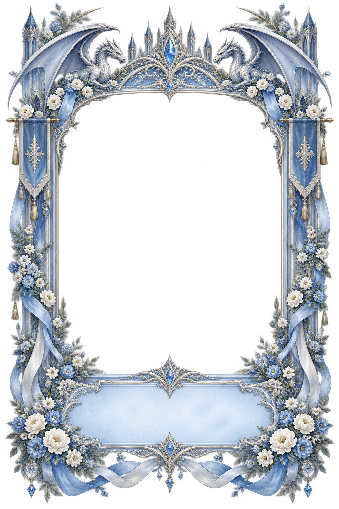

The Wedding Of
Dewi & Didi
06 DESEMBER 2026
Abadikan momen bahagia bersama kami.
Siapkan senyum terbaikmu! ♡

Mengaktifkan kamera…
Foto dapat diunduh ke perangkat. Salinan dikirim ke Google Drive jika konfigurasi unggah admin benar. Pastikan file frame-dewi-didi.png ikut diunggah ke GitHub.